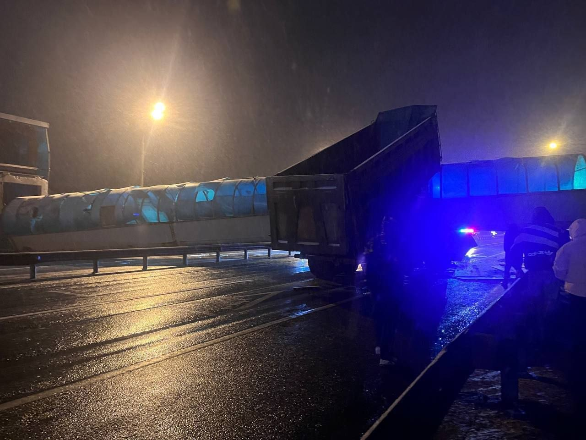
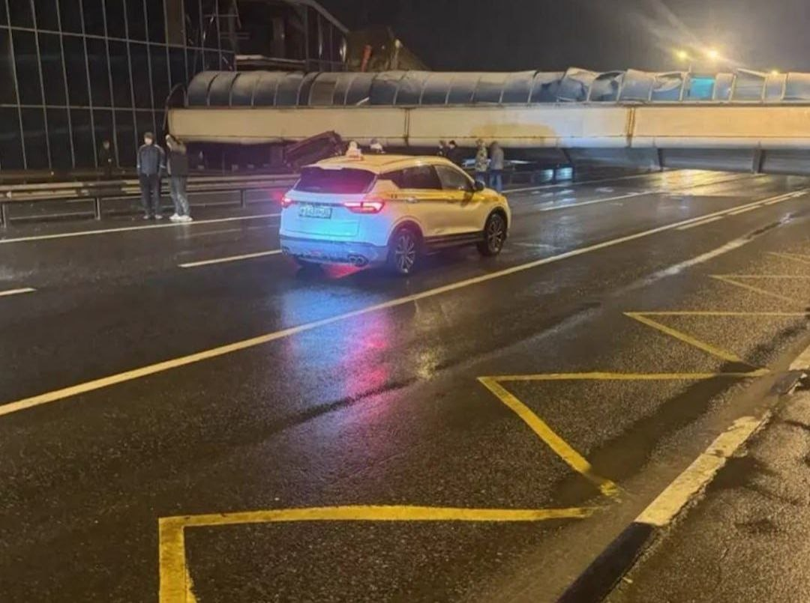
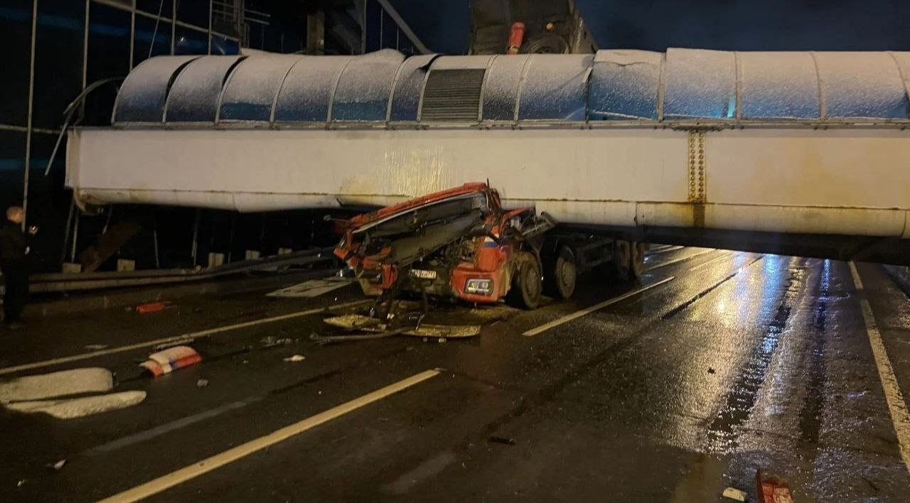

Топор Live
@toporlive
Топор Live
@toporlive
КамАЗ снёс пешеходный мост под Солнечногорском водитель погиб СМИ.



⚡️КамАЗ снёс пешеходный мост под Солнечногорском, водитель погиб, — СМИ.
Грузовик с поднятым кузовом задел надземный переход на Ленинградском шоссе. Мост рухнул на проезжую часть, мужчину зажало под обломками конструкции. Движение по трассе перекрыто в обе стороны, пробка растянулась примерно на четыре километра.
Грузовик с поднятым кузовом задел надземный переход на Ленинградском шоссе. Мост рухнул на проезжую часть, мужчину зажало под обломками конструкции. Движение по трассе перекрыто в обе стороны, пробка растянулась примерно на четыре километра.